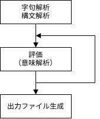

yas80 概要
マルチパスアセンブラ
多くのアセンブラでは、前方参照シンボル等の未解決シンボルが発生するケースの処理のため、 2 パスアセンブル方式が採用されていますが、yas80 はパス数可変としてシンボルを解決する マルチパスアセンブラとしています。
yas80 のアセンブル処理は大きく

の 4 工程に分かれており、評価工程は更に
- stage 1 - シンボル解決
- 未解決シンボルがなくなるまで最大 256 回繰り返し評価
- stage 2 - 生成コード確定
- 生成コードが安定する（評価し生成コードが同一になる）まで、最大 16 回繰り返し評価
- 2 パスアセンブラのパス 2 に相当します。
の 2 段階で構成しています。
なお現在のパス番号（1～）はシステム変数$PASSで、
どちらの stage かはシステム変数$STAGE2で参照できます。
シンボル解決と$DEFINED
シンボル解決は最大 256 回試行します。
ld a, not_defined ; 未定義
> yas80 -v not_defined.asm
# parse
# ast
# eval stage 1
last pass 256, 1 errors, eval.Resolved: false
1 errros
not_defined.asm:1 [ERR] シンボル NOT_DEFINED は未定義
シンボルを前方参照する場合、その時点で「未解決シンボル」としてシンボルテーブルに登録し、 処理を進める中で定義されていればシンボルテーブルを「解決済」として更新します。
疑似命令IF(※)と
組み込み関数$DEFINEDを組み合わせて条件アセンブルする場合、
真偽の変化に注意が必要な場合があります。
※yas80 ではIFはプリプロセッサ命令ではなく、意味解析で真偽判定する疑似命令です。
const v1 = $defined(x)
const v2 = $defined(v2)
const v3 = $defined(fwd)
const fwd = 1
info $fmt("pass %d v1 %d", $pass, v1)
info $fmt("pass %d v2 %d", $pass, v2)
info $fmt("pass %d v3 %d", $pass, v3)
アセンブル時の表示内容です。
temp\test.asm:6 [INFO] pass 1 v1 0
temp\test.asm:7 [INFO] pass 1 v2 0
temp\test.asm:8 [INFO] pass 1 v3 0
temp\test.asm:6 [INFO] pass 2 v1 0
temp\test.asm:7 [INFO] pass 2 v2 1 ; 0->1 へ変化
temp\test.asm:8 [INFO] pass 2 v3 1 ; 0->1 へ変換
v1についてxは未定義なので、$defined(x)は常に 0 ですv2について pass 1 で$defined(v2)の評価する時点では未定義で 0 となり、その後定義しています。このため pass 2 開始時点では定義済みとなっているため、$defined(v2)は 1 に変わります。v3について pass 1 で$defined(fwd)を評価する時点ではfwdを前方参照しているため未定義で 0。 pass 2 時点では定義済みのため$defined(v2)は 1 に変わります。
プリプロセス
yas80 のプリプロセスは C言語のプリプロセスとは異なり構文解析の後、意味解析の前に実行します。
これは-a --auto-procオプションを指定した場合に実行され、
構文解析工程の出力である抽象構文木を処理するauto-proc 処理です。
エラー・警告・情報
yas80 は次の分類に応じてメッセージを表示・出力します。
| 分 類 | 表 記 | 内 容 |
|---|---|---|
| エラー | ERR | yas80 が出力するエラーとERROR疑似命令による出力があります。エラーがあると出力ファイルは生成しませんが、指定があればリストファイルは出力します。 |
| 警告 | WARN | 型変換に関するものなどと、WARN疑似命令による出力があります。警告があってもアセンブルは継続し、指定された出力ファイルも生成します。 |
| 情報 | INFO | INFO疑似命令を使用して出力したもの。アセンブル、出力ファイルへのは影響ありません。 |
重複出力の集約
yas80 はマルチパスアセンブラのため、 エラー・警告・情報がパス毎に出力され同じ内容が重複します。 そのため、アセンブル終了時、およびリストファイル出力時は"同じ内容の情報"は 1 つに集約して出力するようにしています。
const val = 123
info $fmt("value: %d", val)
ld a, valmsg.asm:2 [INFO] val: 123
各パス毎の値の変化をINFO等で出力したい場合は、システム変数$PASSを使用します。
const val= 123
info $fmt("pass: %d, val: %d", $pass, val)
ld a, valmsg.asm:2 [INFO] pass: 1, val: 123
msg.asm:2 [INFO] pass: 2, val: 123
異常発生時の挙動
字句解析・構文解析
- syntax error が発生した場合、アセンブルを中止します。
- 中止した場合出力ファイルは生成しません。
- リストファイル、シンボルファイル、マップファイルは出力しません。
プリプロセス
- この工程ではエラー、警告は発生しません。
評価：シンボル解決
- エラーが発生した場合、評価を中止します。
- 警告、情報の場合、評価を継続します。
- 評価を中止した場合出力ファイルは生成しません。
- 指定されていればリストファイルを出力します。
- シンボルファイル、マップファイルは出力しません。
評価：生成コード確定
- 規定回数評価してもコードが安定しない場合、警告を表示します。
- 出力ファイルを生成します。
- 指定されていればリストファイル、シンボルファイル、マップファイルを出力します。
出力ファイル生成
- 出力ファイルを生成します。
- OS 側でのエラーなど、出力ファイル生成時にエラーが発生すればその内容を表示します。
- 指定されていればリストファイル、シンボルファイル、マップファイルを出力します。
生成コードの配置
生成コードの配置には ORG疑似命令を使用します。
yas80 ではORGから次のORGまでを "セグメント" としてまとめ、
出力ファイル中での配置を決定します。
ORGの第 1 引数で指定されたアドレスがセグメント内の最初の命令のベースアドレスになります。ORGの第 2 引数を指定しない場合、もしくはABSを指定した場合は "絶対セグメント" となり、ORGで指定されたアドレスがセグメントのアドレスになります。ORGの第 2 引数にRELを指定した場合は "相対セグメント" となり、先行する絶対セグメントの一部として配置されます。- 相対セグメントに先行する絶対セグメントがない場合、
ORG 0の絶対セグメントが指定されたものとして処理します。 - 絶対セグメントのアドレス範囲は重複できません。エラーになります。
- 相対セグメントは配置上はデータとして扱うため、他のセグメントとアドレス範囲は重複してもエラーになりません
| ORG 指定 | セグメント種別 | 配置先 |
|---|---|---|
ORG addr | 絶対 | addr |
ORG addr, ABS | ||
ORG addr, REL | 相対 | 先行する絶対・相対セグメントの最終アドレス + 1 |
ORG なし
ORGを指定していない場合、
addrとして0が指定された（ORG 0）として扱います。
ORG addr
addrを命令のベースアドレスとしてアセンブルし、
出力ファイルの配置（ロード）アドレスとして出力します（MZT, T88 の場合）。
複数 ORG（RELなし）
複数の ORG を指定した場合、
- それぞれ指定されたアドレスをベースアドレスとしてアセンブル
- セグメントのアドレスを
ORGで指定されたアドレスとする - セグメントをアドレス順でソート
- セグメントのアドレスを元に出力ファイル内での位置を決定し、
出力ファイルを生成します。
出力ファイルのロードアドレスはソート後の先頭セグメントのアドレスです。
セグメントのアドレ範囲が重複する場合はエラーとします。
また、セグメント間にギャップがある場合、--fillオプションで指定した値で埋めます。
org $20
jp $ ; アドレス $20 から配置なので jp $0020
org $00
jp $ ; アドレス $00 から配置なので jp $0000
org $10
jp $ ; アドレス $10 から配置なので jp $0010
0000: c3 00 00 ff ff ff ff ff ff ff ff ff ff ff ff ff ; jp $0000 0003-000f はギャップ
0010: c3 10 00 ff ff ff ff ff ff ff ff ff ff ff ff ff ; jp $0010 0013-001f はギャップ
0020: c3 20 00 ; jp $0020
複数 ORG（RELあり）
相対セグメントを使用する場合の例を示します。
org $20
jp $ ; jp $0020
org $100, REL ; 相対セグメント
top1:
jp top1 ; jp $0100
org $100, REL ; 相対セグメントは他のセグメントとアドレス重複可能
top2:
jp top2 ; jp $0100
org $10 ; ロードアドレス $10 から配置
jp $ ; jp $0010
; 絶対セグメント $0010 + gap
0010: c3 10 00 ff ff ff ff ff ff ff ff ff ff ff ff ff ; jp $0010 0003-000f はギャップ
; 絶対セグメント $0020 + 相対セグメント $0100 x 2
0020: c3 20 00 c3 00 01 c3 00 01 ; jp $0020
; jp $0100
; jp $0100
この場合、シンボルファイルは同じアドレスに対し複数のシンボルが出力されます。
0100 TOP1
0100 TOP2
次の例は2000 - 20ffの 256 バイトの領域に、
sub1もしくはsub2の どちらかをロードし、
mainからはcall 2000とすることで異なる処理を実行することを想定したものです。
org $1200
main:
ld a, 0
call select_bank ; 2000 からの領域に sub1 or sub 2 をロード
call $2000 ; sub1, sub2 でも同じ
halt
select_bank proc
ret
endp
;
org $2000
; bank 0
org $2000, rel
sub1 proc
; do something
ret
endp
align 256
; bank 1
org $2000, rel
sub2 proc
; do something
ret
endp
align 256
$と$$
$ と $$ はどちらもアドレスを格納するシステム変数です。
$は現在のローケンションカウンタ（アドレス）で命令のベースアドレスです。$$は現在の配置ローケンションカウンタ（アドレス）で出力先のアドレスです。
絶対セグメントでは $ == $$ になりますが、相対セグメントでは $ != $$ になります。
次に例を示します。
org $1000
a1 equ $
a1r equ $$
ret
org $2000
a2 equ $
a2r equ $$
ret
org $3000, REL
a3 equ $
a3r equ $$
ret
org $4000, REL
a4 equ $
a4r equ $$
ret
org $5000
a5 equ $
a5r equ $$
ret
info $fmt("A1: %04x, A1R: %04x", a1, a1r)
info $fmt("A2: %04x, A2R: %04x", a2, a2r)
info $fmt("A3: %04x, A3R: %04x", a3, a3r)
info $fmt("A4: %04x, A4R: %04x", a4, a4r)
info $fmt("A5: %04x, A5R: %04x", a5, a5r)
rel.asm:26 [INFO] A1: 1000, A1R: 1000
rel.asm:27 [INFO] A2: 2000, A2R: 2000
rel.asm:28 [INFO] A3: 3000, A3R: 2001
rel.asm:29 [INFO] A4: 4000, A4R: 2002
rel.asm:30 [INFO] A5: 5000, A5R: 5000
A1R/A2R/A5Rは絶対セグメン内のため、A1/A2/A5と同じアドレスになります。A3R/A4Rは相対セグメン内のため、先行する絶対セグメントの続きに配置されるため、A3/A4と異なるアドレスとなります。
スコープ
yas80 は次のスコープがあり、 異なるスコープ間で同じ名前（識別子）を使用することが可能です。
内容はそれぞれの疑似命令を参照ください。
| 疑似命令 | スコープ | 専用識別子 | ネスト可否 |
|---|---|---|---|
PROC |
PROC定義内 |
あり (.) 匿名シンボル |
不可 |
| マクロ呼出し | MACROで定義したマクロの呼出し内 |
あり (@) |
可 (*1) |
REPT |
REPTの各展開内 |
あり (@) |
可 |
FUNC |
FUNCで定義した関数の呼び出し内 |
なし | 可 |
ENUM |
ENUM要素 |
なし (*2) | 可 |
1 マクロ定義はネスト不可です。マクロ定義の中でマクロを定義することはできません。
2 ENUM要素定義時に他の要素を参照する場合を除きます。